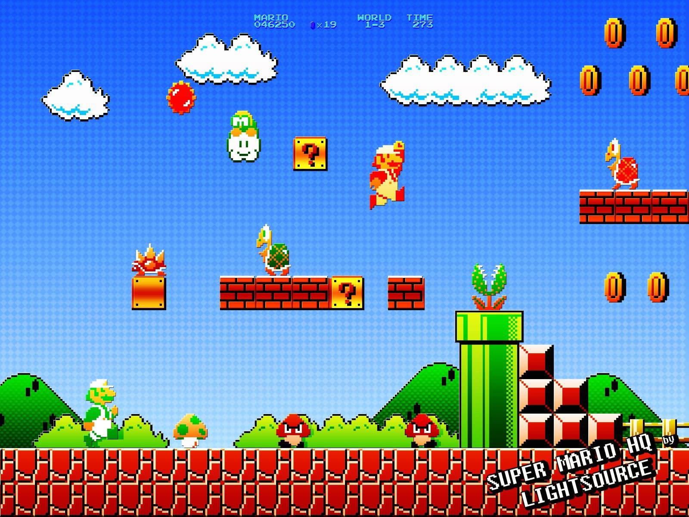
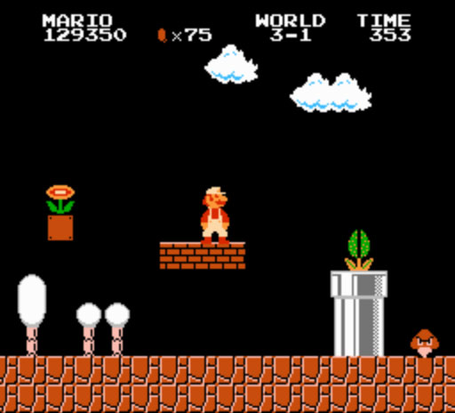
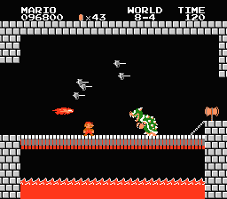
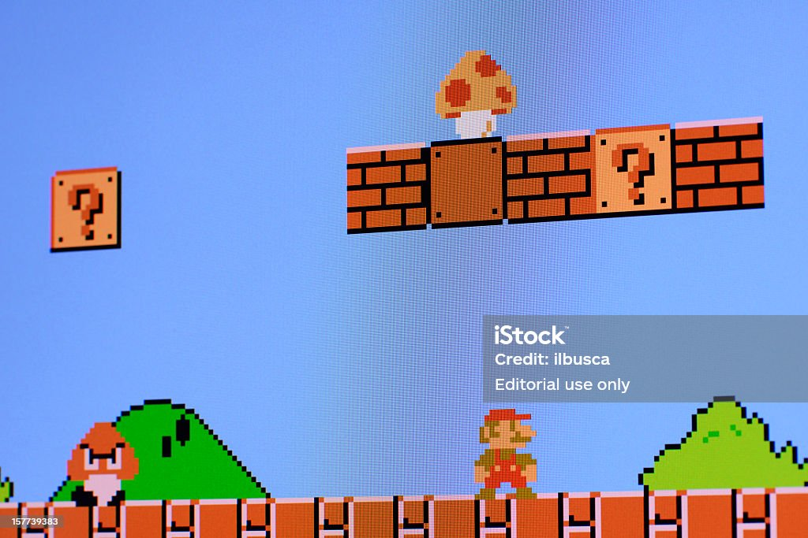
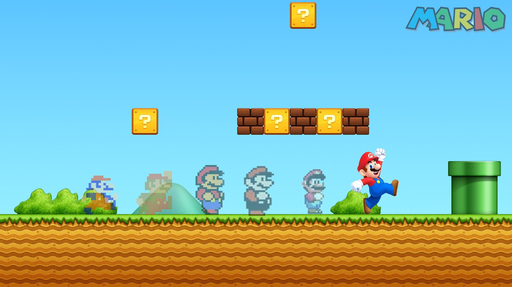
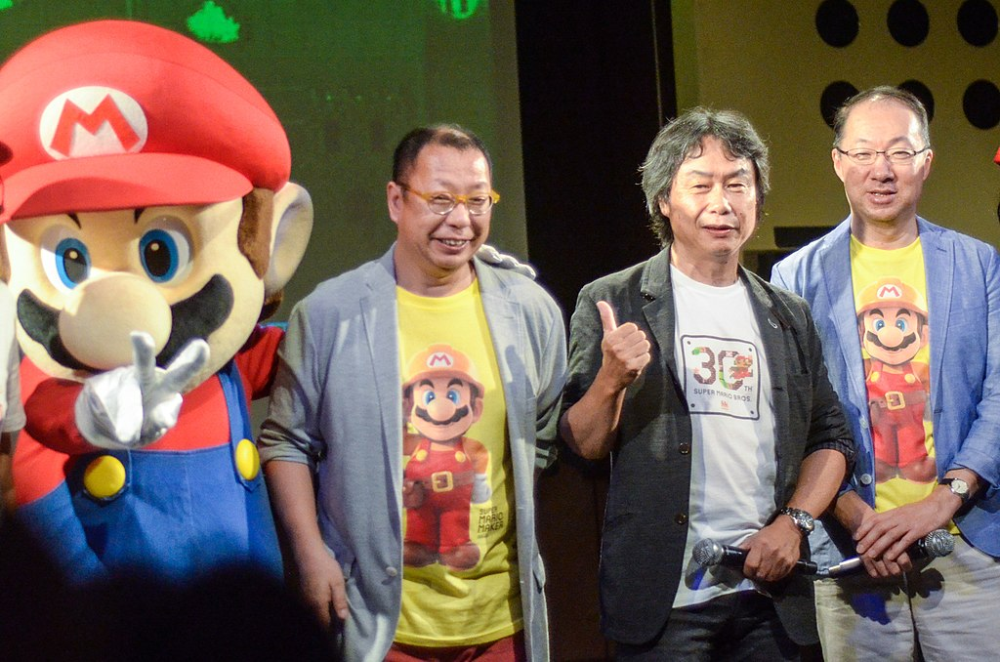
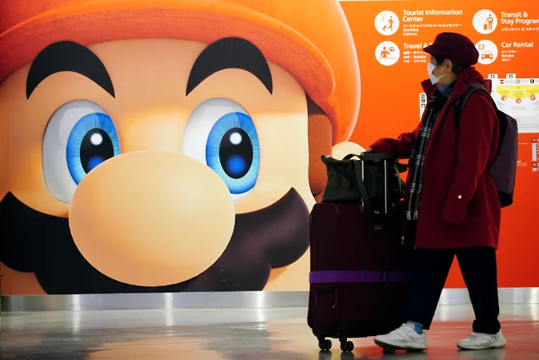

Игра марио
Super Mario Bros. (яп. スーパーマリオブラザーズ су:па: марио бурадза:дзу, рус. Супербратья Марио) — видеоигра в жанре платформера, разработанная и выпущенная в 1985 году японской компанией Nintendo для платформы Famicom. Занесена в «Книгу рекордов Гиннесса» как самая продаваемая игра в истории. После успеха игры её главный герой, Марио, стал символом компании Nintendo и одним из самых известных игровых персонажей в мире.


Сюжет игры
Марио и Луиджи отправляются в путешествие по Грибному Королевству, чтобы найти принцессу Пич, которую Боузер заточил в своём за́мке. Во время путешествия он встречает таких врагов, как Гумба и Купа Трупа, и после схватки с Боузером в первых семи замках находит Тоада, который подсказывает, что Пич заточена в другом замке. В восьмом замке (уровень 8-4) Марио (или Луиджи) находит самого Боузера и сражается с ним. После этого он находит принцессу Пич. На этом этапе сюжет игры заканчивается.


Игровой процесс
Главными героями игры являются водопроводчик Марио и его брат Луиджи (в качестве игрового персонажа для второго игрока). Цель игры — пройти через Грибное королевство, ускользая или уничтожая солдат черепашьего Короля Купы (также известного как Боузер), чтобы спасти захваченную им в плен Принцессу.


Разработка игры
За дизайн Super Mario Bros. отвечало подразделение Nintendo Research & Development во главе с Сигэру Миямото и Такаси Тэдзукой. Помощь в программной части игры оказывала компания SRD Company, Ltd. с Тосихико Накаго.


Разработчики
Сигэру Миямото — руководитель проекта, дизайнер
Такаси Тэдзука — помощник руководителя, дизайнер
Кодзи Кондо — композитор
Тосихико Накаго — программист
Кадзуаки Морита — программист
Хироси Ямаути — исполнительный продюсер
Музыка
Основная статья: Super Mario Bros. (саундтрек)
Сиквелы
Super Mario Bros.: The Lost Levels (в Японии вышла под названием Super Mario Bros. 2)
Super Mario Bros. 2 (в Японии вышла под названием Super Mario USA)
Ремейки
Super Mario All-Stars — сборник из ремейков четырёх первых игр серии Super Mario, включая японскую версию Super Mario Bros. 2, для платформы SNES. Обладает улучшенной графикой и звуком по сравнению с оригиналами.
Super Mario Bros. Deluxe — сборник из ремейков «Super Mario Bros.» и «Super Mario Bros.: The Lost Levels» (The Lost Levels доступна только для прохождения в многопользовательской игре) для Game Boy Color. Отличается от оригинала возможностью сохранения и продолжения игры после того, как все «жизни» израсходованы. Графика и звук были перенесены из оригинала.
Альтернативные версии
Vs. Super Mario Bros.
All Night Nippon Super Mario Bros.
Super Mario Bros. Special
Другие проекты